1. Optical deposition
光能沉积
Where does the laser energy go? Corresponding to Theory 01, source page 1.
激光能量去了哪里？对应 Theory 01，原始材料第1页。
The first task is not yet to predict cavitation. It is to construct a heating field whose integral equals the intended absorbed energy.
第一项任务还不是预测空化，而是构造一个热源场，使其积分等于设定的吸收能量。
1.1 From beam fluence to total pulse energy
从光束能量面密度到脉冲总能量
Fluence is the laser energy delivered per unit area during one pulse:
能量面密度（fluence）是单个脉冲期间单位面积接收到的激光能量：
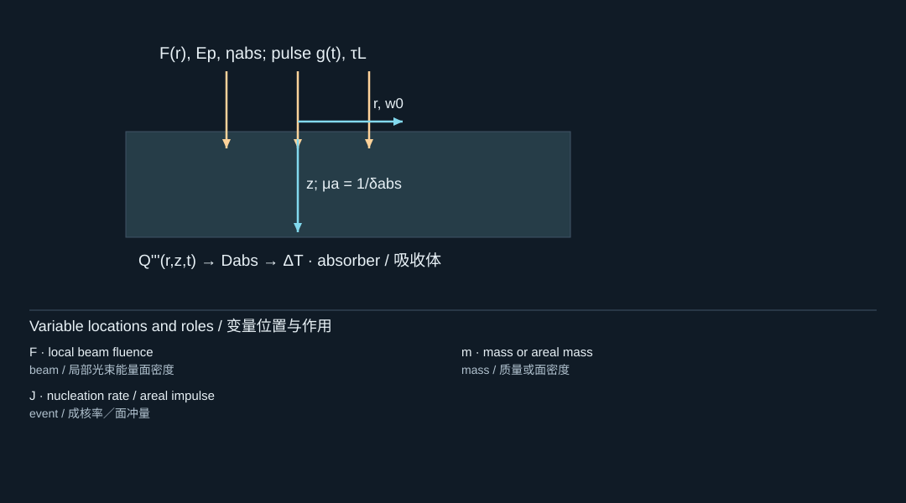
The diagram locates the physical system; its key lists the symbols in the formula. Read the definition in the surrounding derivation when a letter has different roles.
图示标出物理体系，图例列出公式中的符号。若某字母有多种作用，应以邻近推导中的定义为准。
It is different from intensity, which is power per unit area:
它不同于光强，后者是单位面积上的功率：
The diagram locates the physical system; its key lists the symbols in the formula. Read the definition in the surrounding derivation when a letter has different roles.
图示标出物理体系，图例列出公式中的符号。若某字母有多种作用，应以邻近推导中的定义为准。
The source assumes an axisymmetric Gaussian fluence profile,
原始材料假设能量面密度具有轴对称高斯分布：
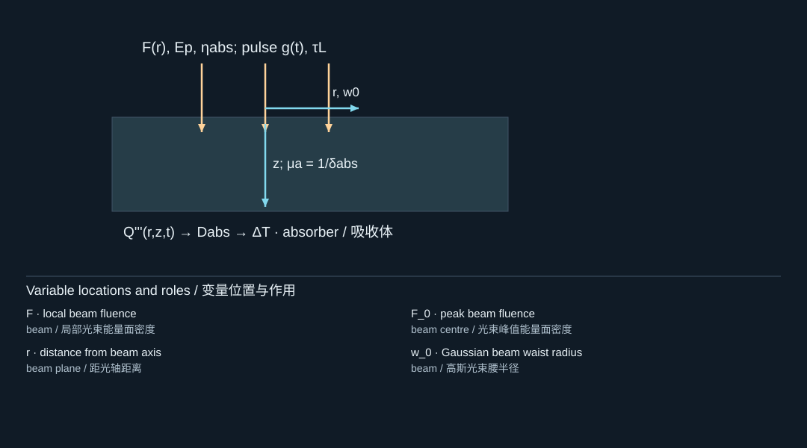
The diagram locates the physical system; its key lists the symbols in the formula. Read the definition in the surrounding derivation when a letter has different roles.
图示标出物理体系，图例列出公式中的符号。若某字母有多种作用，应以邻近推导中的定义为准。
where is the on-axis fluence and is the radius at which the fluence has fallen to . The total pulse energy is the area integral. An annular element has area , so
其中， 是轴线上能量面密度， 是能量面密度下降至 时的半径。脉冲总能量由面积积分得到。环形微元的面积为 ，因此
The diagram locates the physical system; its key lists the symbols in the formula. Read the definition in the surrounding derivation when a letter has different roles.
图示标出物理体系，图例列出公式中的符号。若某字母有多种作用，应以邻近推导中的定义为准。
Set
令
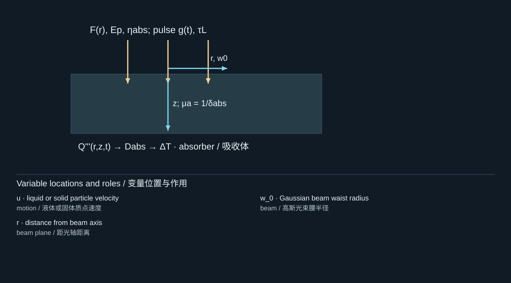
The diagram locates the physical system; its key lists the symbols in the formula. Read the definition in the surrounding derivation when a letter has different roles.
图示标出物理体系，图例列出公式中的符号。若某字母有多种作用，应以邻近推导中的定义为准。
Then
于是
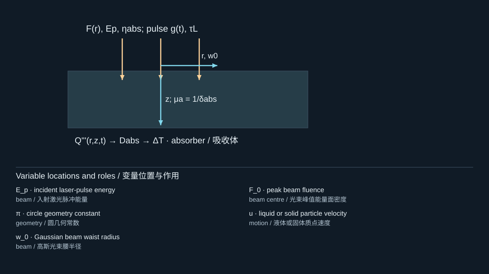
The diagram locates the physical system; its key lists the symbols in the formula. Read the definition in the surrounding derivation when a letter has different roles.
图示标出物理体系，图例列出公式中的符号。若某字母有多种作用，应以邻近推导中的定义为准。
which gives
得到
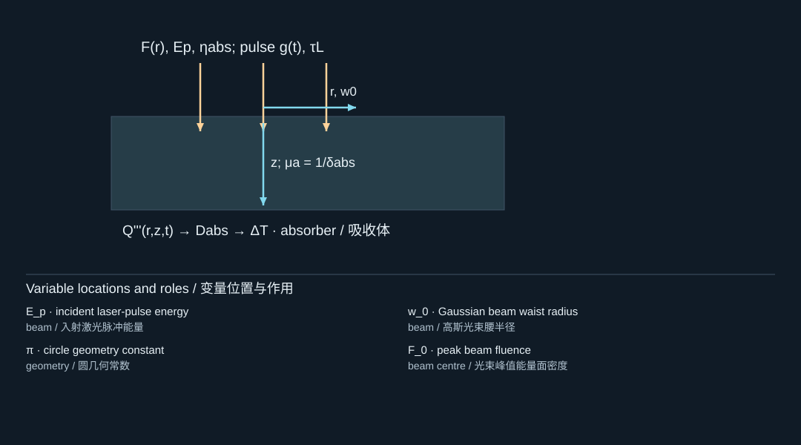
The diagram locates the physical system; its key lists the symbols in the formula. Read the definition in the surrounding derivation when a letter has different roles.
图示标出物理体系，图例列出公式中的符号。若某字母有多种作用，应以邻近推导中的定义为准。
This explains the factor : the beam is Gaussian, not a uniformly illuminated disk. This is the spatial normalization used in the source. [S1, p. 1]
这就解释了系数 的来源：光束是高斯分布，而不是均匀照明的圆盘。这正是原始材料采用的空间归一化关系。[S1，第1页]
For the reference inputs,
代入参考输入：
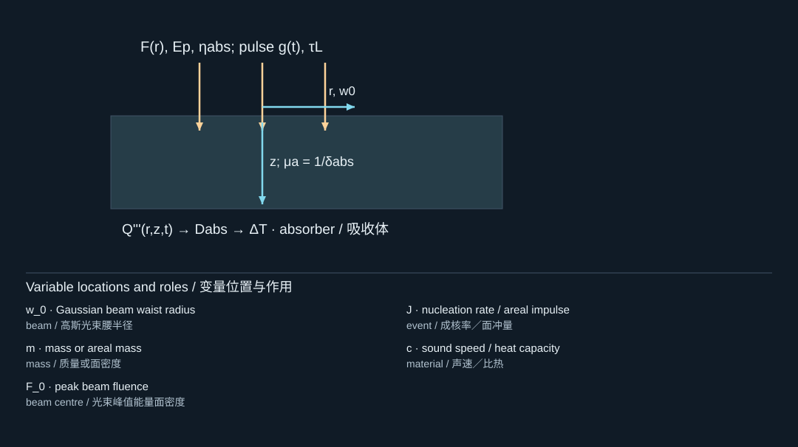
The diagram locates the physical system; its key lists the symbols in the formula. Read the definition in the surrounding derivation when a letter has different roles.
图示标出物理体系，图例列出公式中的符号。若某字母有多种作用，应以邻近推导中的定义为准。
we obtain
可得
The diagram locates the physical system; its key lists the symbols in the formula. Read the definition in the surrounding derivation when a letter has different roles.
图示标出物理体系，图例列出公式中的符号。若某字母有多种作用，应以邻近推导中的定义为准。
Thus,
因此
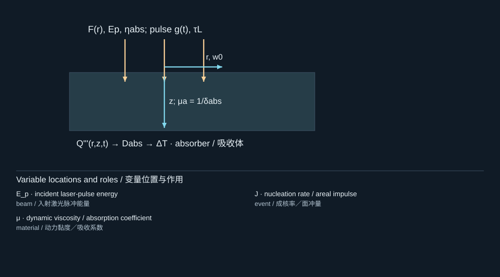
The diagram locates the physical system; its key lists the symbols in the formula. Read the definition in the surrounding derivation when a letter has different roles.
图示标出物理体系，图例列出公式中的符号。若某字母有多种作用，应以邻近推导中的定义为准。
With the assumed absorbed fraction ,
采用假设的吸收比例 ，得到
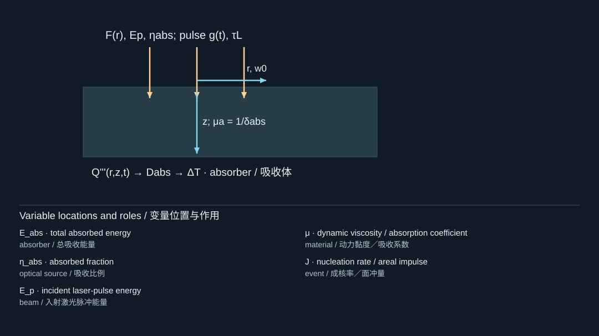
The diagram locates the physical system; its key lists the symbols in the formula. Read the definition in the surrounding derivation when a letter has different roles.
图示标出物理体系，图例列出公式中的符号。若某字母有多种作用，应以邻近推导中的定义为准。
These reproduce the reference energy values in the document. They are scenario calculations, not a measured cavitation threshold. [S1, p. 5]
这些结果复现了原始材料中的参考能量值。它们属于情景计算结果，并非实测空化阈值。[S1，第5页]
1.2 From pulse energy to a time-dependent source
从脉冲能量到时变热源
We now distribute that energy over time. Write
现在将这部分能量沿时间分配，写成
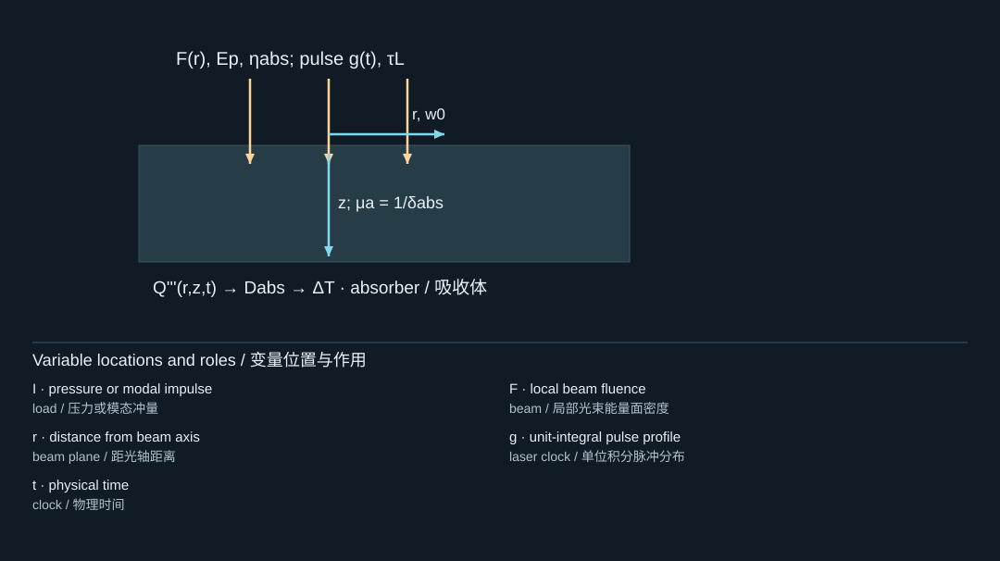
The diagram locates the physical system; its key lists the symbols in the formula. Read the definition in the surrounding derivation when a letter has different roles.
图示标出物理体系，图例列出公式中的符号。若某字母有多种作用，应以邻近推导中的定义为准。
and require
并要求
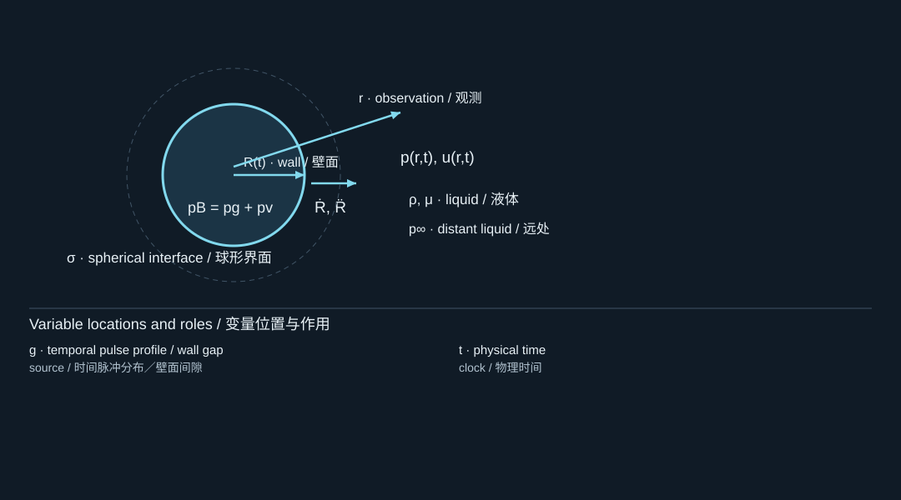
The diagram locates the physical system; its key lists the symbols in the formula. Read the definition in the surrounding derivation when a letter has different roles.
图示标出物理体系，图例列出公式中的符号。若某字母有多种作用，应以邻近推导中的定义为准。
This ensures that integrating intensity over the pulse recovers fluence:
这样就保证了对整个脉冲的光强进行时间积分，可以恢复能量面密度：
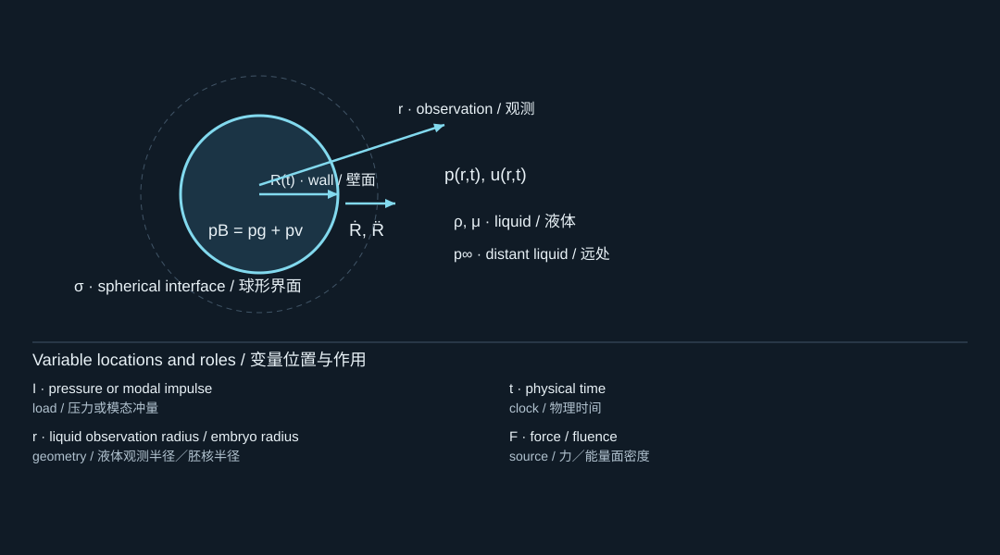
The diagram locates the physical system; its key lists the symbols in the formula. Read the definition in the surrounding derivation when a letter has different roles.
图示标出物理体系，图例列出公式中的符号。若某字母有多种作用，应以邻近推导中的定义为准。
For a Gaussian pulse with full width at half maximum , the normalized function shown in the slide is
对于半高全宽为 的高斯脉冲，原始页面给出的归一化函数为
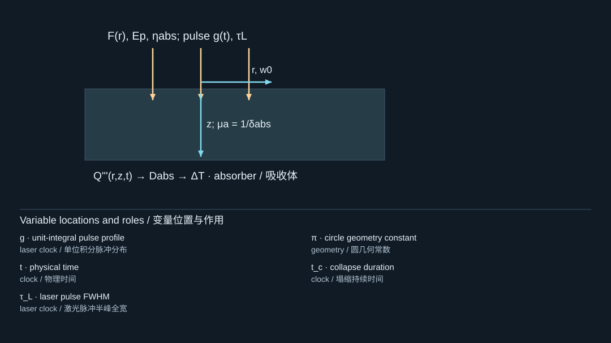
The diagram locates the physical system; its key lists the symbols in the formula. Read the definition in the surrounding derivation when a letter has different roles.
图示标出物理体系，图例列出公式中的符号。若某字母有多种作用，应以邻近推导中的定义为准。
Why this expression? At , the exponential becomes , establishing the specified full width. The prefactor follows from the Gaussian integral and makes the total integral unity.
为什么是这个表达式？在 时，指数项变为 ，因此满足指定的半高全宽。前面的系数由高斯积分得到，使总积分等于1。
Notice that
注意
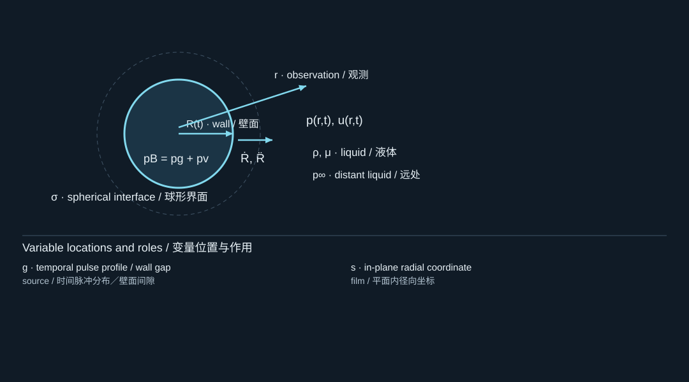
The diagram locates the physical system; its key lists the symbols in the formula. Read the definition in the surrounding derivation when a letter has different roles.
图示标出物理体系，图例列出公式中的符号。若某字母有多种作用，应以邻近推导中的定义为准。
Therefore has units of intensity rather than energy density.
因此， 的单位是光强的单位，而不是能量密度的单位。
1.3 From surface intensity to volumetric heating
从表面光强到体积热源
Let measure depth into the absorbing material. The Beer–Lambert assumption is
以 表示进入吸收材料内部的深度。Beer–Lambert 假设为

The diagram locates the physical system; its key lists the symbols in the formula. Read the definition in the surrounding derivation when a letter has different roles.
图示标出物理体系，图例列出公式中的符号。若某字母有多种作用，应以邻近推导中的定义为准。
where is an absorption coefficient with units . Solving gives
其中， 是吸收系数，单位为 。求解可得
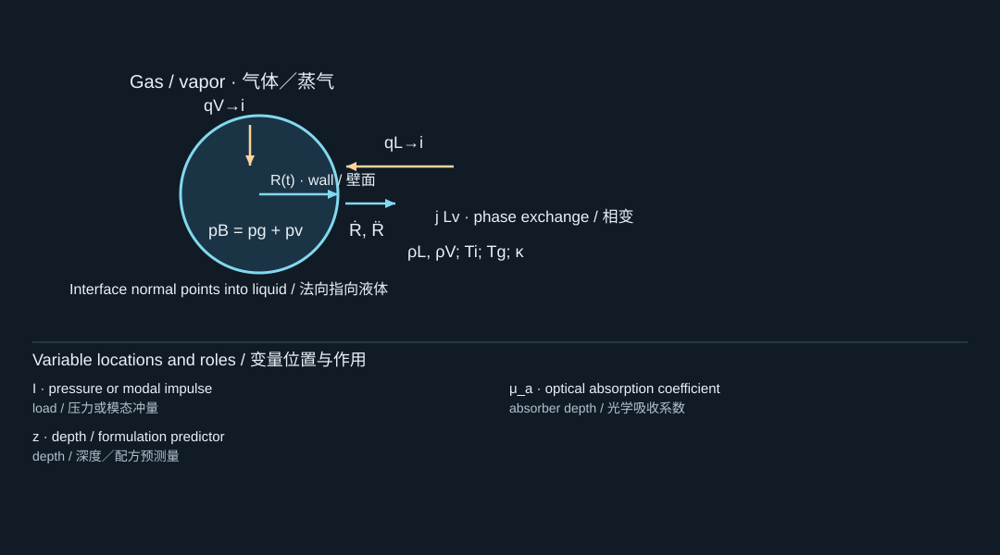
The diagram locates the physical system; its key lists the symbols in the formula. Read the definition in the surrounding derivation when a letter has different roles.
图示标出物理体系，图例列出公式中的符号。若某字母有多种作用，应以邻近推导中的定义为准。
The optical power removed from the beam per unit volume is
单位体积内从光束中吸收的光功率为

The diagram locates the physical system; its key lists the symbols in the formula. Read the definition in the surrounding derivation when a letter has different roles.
图示标出物理体系，图例列出公式中的符号。若某字母有多种作用，应以邻近推导中的定义为准。
Combining spatial, temporal, and depth dependence produces the source’s heating field:
将空间分布、时间分布和深度衰减结合起来，得到原始材料采用的热源场：
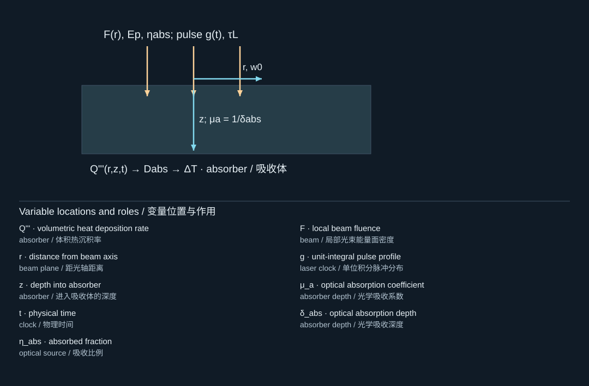
The diagram locates the physical system; its key lists the symbols in the formula. Read the definition in the surrounding derivation when a letter has different roles.
图示标出物理体系，图例列出公式中的符号。若某字母有多种作用，应以邻近推导中的定义为准。
Here is volumetric heating power:
这里的 是单位体积发热功率：
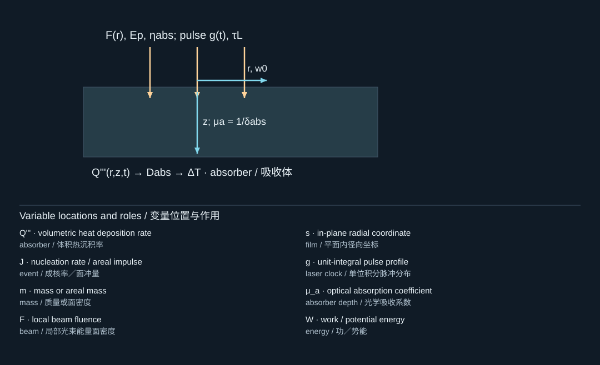
The diagram locates the physical system; its key lists the symbols in the formula. Read the definition in the surrounding derivation when a letter has different roles.
图示标出物理体系，图例列出公式中的符号。若某字母有多种作用，应以邻近推导中的定义为准。
For the infinite lateral plane and semi-infinite depth used in this normalization,
在该归一化所采用的横向无限平面与半无限深度范围内，
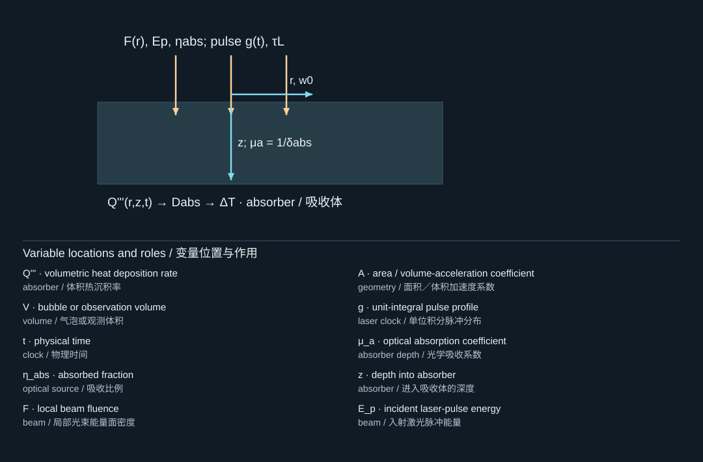
The diagram locates the physical system; its key lists the symbols in the formula. Read the definition in the surrounding derivation when a letter has different roles.
图示标出物理体系，图例列出公式中的符号。若某字母有多种作用，应以邻近推导中的定义为准。
Every factor has a clear purpose: the spatial integral supplies pulse energy; the time and depth integrals equal one. This is the energy closure emphasized on source page 1. [S1, p. 1]
每个因子都有明确作用：空间积分给出脉冲能量，时间积分与深度积分均等于1。这就是原始材料第1页强调的能量闭合。[S1，第1页]
A finite simulation domain needs its own accounting. For example, a layer of thickness contains only the depth fraction
有限仿真域需要单独进行能量核算。 例如，厚度为 的材料层仅包含如下深度积分比例：
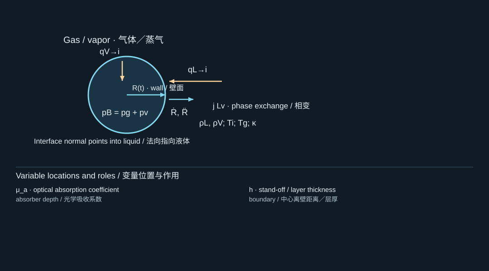
The diagram locates the physical system; its key lists the symbols in the formula. Read the definition in the surrounding derivation when a letter has different roles.
图示标出物理体系，图例列出公式中的符号。若某字母有多种作用，应以邻近推导中的定义为准。
Consequently, the source above integrates to over that layer. Whether this is the correct target, or whether the depth profile should be renormalized, depends on whether denotes absorption over the entire deposition profile or absorption specifically in the finite layer. That interpretation must be fixed before implementing the source.
因此，在这一材料层内，上述热源的积分为 。这是否就是正确的目标值，或者是否需要重新归一化深度分布，取决于 表示整个沉积分布范围内的吸收比例，还是专指该有限厚度层内的吸收比例。在实现热源之前，必须明确这一含义。
The source’s numerical check is
原始材料给出的数值检查条件为
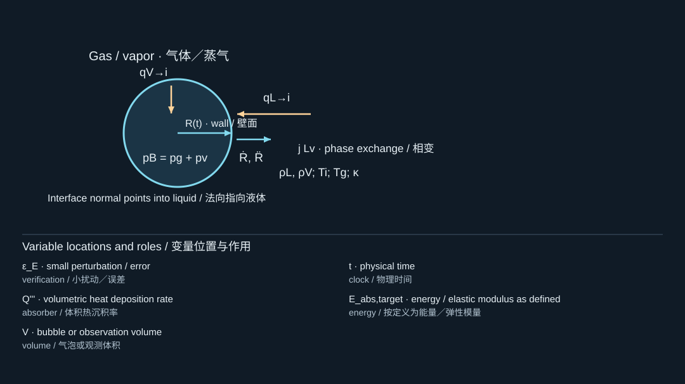
The diagram locates the physical system; its key lists the symbols in the formula. Read the definition in the surrounding derivation when a letter has different roles.
图示标出物理体系，图例列出公式中的符号。若某字母有多种作用，应以邻近推导中的定义为准。
Passing this check establishes correct energy bookkeeping—not correct cavitation physics.
通过这项检查说明能量核算正确，并不意味着空化物理模型已经正确。
1.4 Local dose, peak rate, and temperature rise
局部剂量、峰值速率与温升
The local absorbed energy per unit volume is
局部单位体积吸收能量为
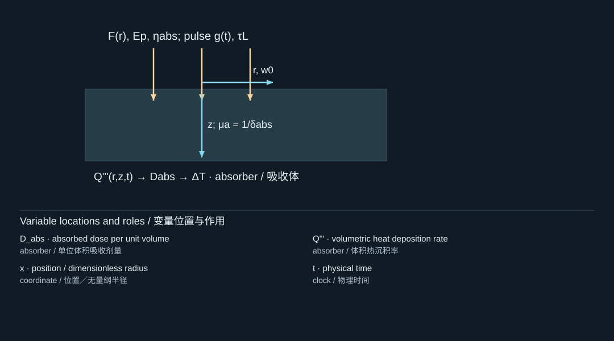
The diagram locates the physical system; its key lists the symbols in the formula. Read the definition in the surrounding derivation when a letter has different roles.
图示标出物理体系，图例列出公式中的符号。若某字母有多种作用，应以邻近推导中的定义为准。
Using the normalized pulse,
利用归一化脉冲可得
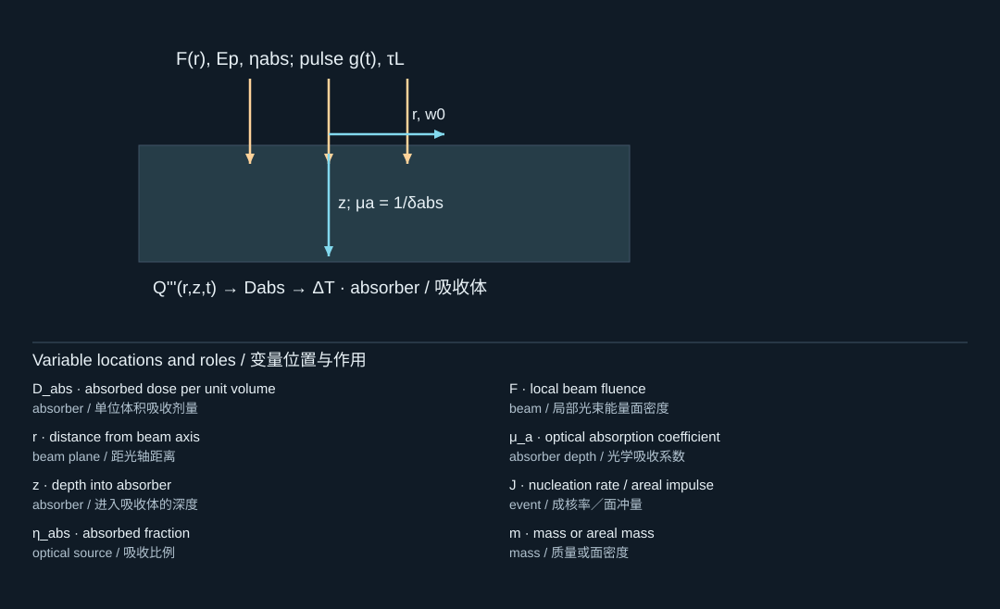
The diagram locates the physical system; its key lists the symbols in the formula. Read the definition in the surrounding derivation when a letter has different roles.
图示标出物理体系，图例列出公式中的符号。若某字母有多种作用，应以邻近推导中的定义为准。
The peak deposition rate is
峰值沉积速率为
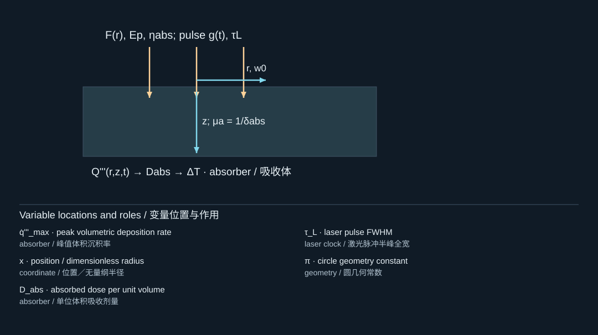
The diagram locates the physical system; its key lists the symbols in the formula. Read the definition in the surrounding derivation when a letter has different roles.
图示标出物理体系，图例列出公式中的符号。若某字母有多种作用，应以邻近推导中的定义为准。
Thus, for this pulse family, equal dose delivered in a shorter pulse means a larger peak heating rate. These are the two local predictors carried into source page 2. [S1, p. 2]
因此，对于这一类脉冲，在更短的时间内沉积相同剂量，就意味着更高的峰值加热速率。这两个量正是原始材料第2页采用的局部预测量。[S1，第2页]
To interpret the temperature-rise estimate on source page 5, add the following simple local energy balance. Assume constant properties, negligible heat loss during deposition, and no phase change:
为了理解原始材料第5页的温升估计，可引入下述简单的局部能量平衡。假设材料参数不变、沉积过程中热损失可忽略，且不发生相变：
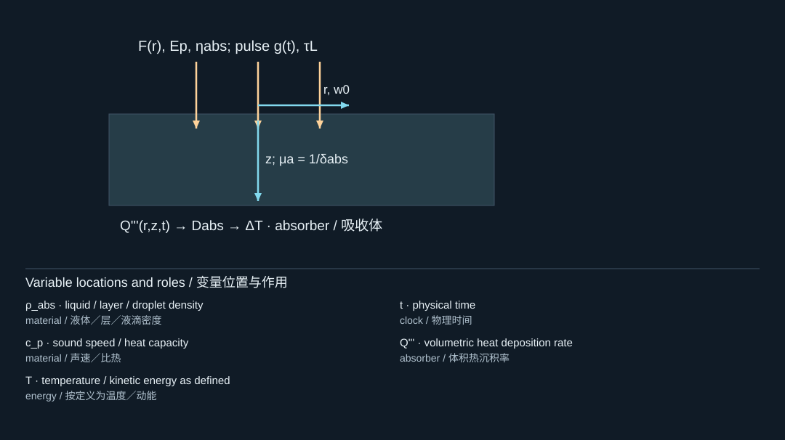
The diagram locates the physical system; its key lists the symbols in the formula. Read the definition in the surrounding derivation when a letter has different roles.
图示标出物理体系，图例列出公式中的符号。若某字母有多种作用，应以邻近推导中的定义为准。
Integrating over the pulse gives
对整个脉冲积分得到
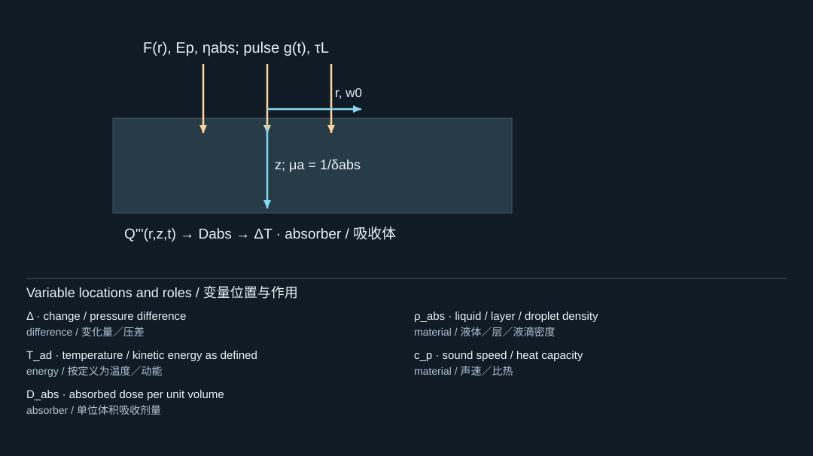
The diagram locates the physical system; its key lists the symbols in the formula. Read the definition in the surrounding derivation when a letter has different roles.
图示标出物理体系，图例列出公式中的符号。若某字母有多种作用，应以邻近推导中的定义为准。
At the beam centre and deposition surface,
在光束中心的能量沉积表面处，
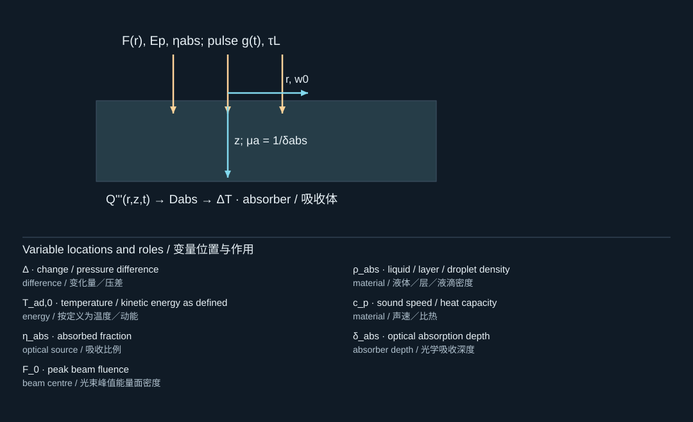
The diagram locates the physical system; its key lists the symbols in the formula. Read the definition in the surrounding derivation when a letter has different roles.
图示标出物理体系，图例列出公式中的符号。若某字母有多种作用，应以邻近推导中的定义为准。
The density and heat capacity must belong to the material receiving the heat. They need not be those of the surrounding liquid.
这里的密度和比热容必须对应实际接收热量的材料，不一定是周围液体的参数。
The source reports a reference adiabatic rise of , but the five pages do not provide all thermal properties and deposition-depth values needed to independently reproduce it. More importantly, this adiabatic calculation does not include latent heat or determine whether a droplet activates. [S1, p. 5]
原始材料给出的参考绝热温升为 ，但这五页并未提供独立复现该结果所需的全部热物性与沉积深度数值。更重要的是，这项绝热计算不包含潜热，也不能判断液滴是否会被激活。[S1，第5页]
1.5 Why enough energy does not guarantee a bubble
为什么能量足够并不保证气泡形成
The pressure–volume work plot asks a narrower question: suppose a fraction of absorbed energy were available for bubble expansion. What radius could that energy support against a constant pressure difference?
压强–体积功曲线回答的是一个更有限的问题：假设吸收能量中有比例 可用于气泡膨胀，那么在克服恒定压差的条件下，这部分能量最多能够支持多大的气泡半径？
With a resisting pressure ,
对于阻碍膨胀的压差 ，
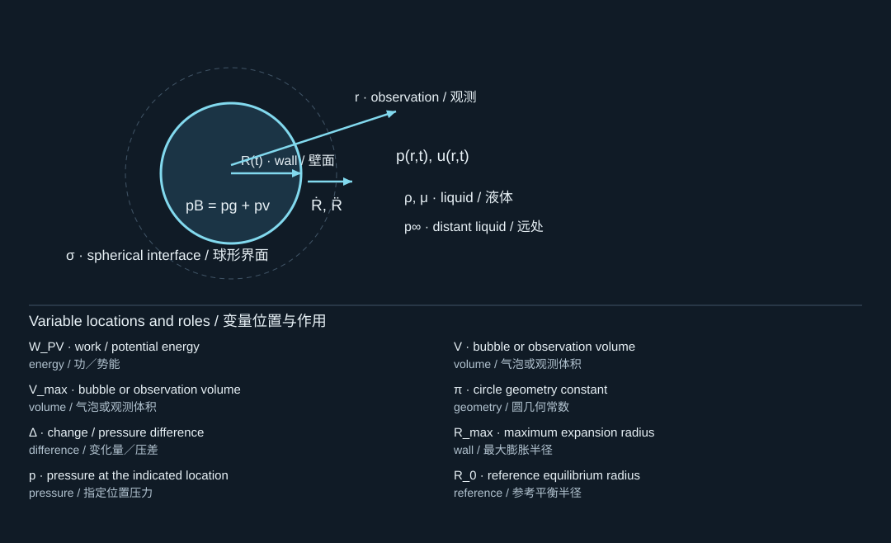
The diagram locates the physical system; its key lists the symbols in the formula. Read the definition in the surrounding derivation when a letter has different roles.
图示标出物理体系，图例列出公式中的符号。若某字母有多种作用，应以邻近推导中的定义为准。
Equating this to the available energy gives the screening radius
令其等于可用能量，得到筛查半径
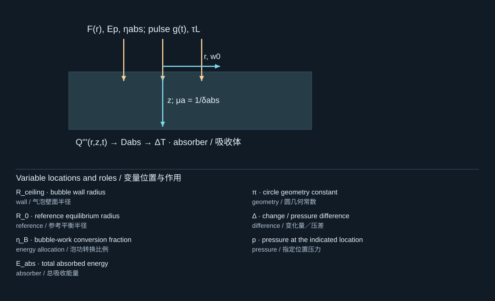
The diagram locates the physical system; its key lists the symbols in the formula. Read the definition in the surrounding derivation when a letter has different roles.
图示标出物理体系，图例列出公式中的符号。若某字母有多种作用，应以邻近推导中的定义为准。
Neglecting ,
忽略 后，
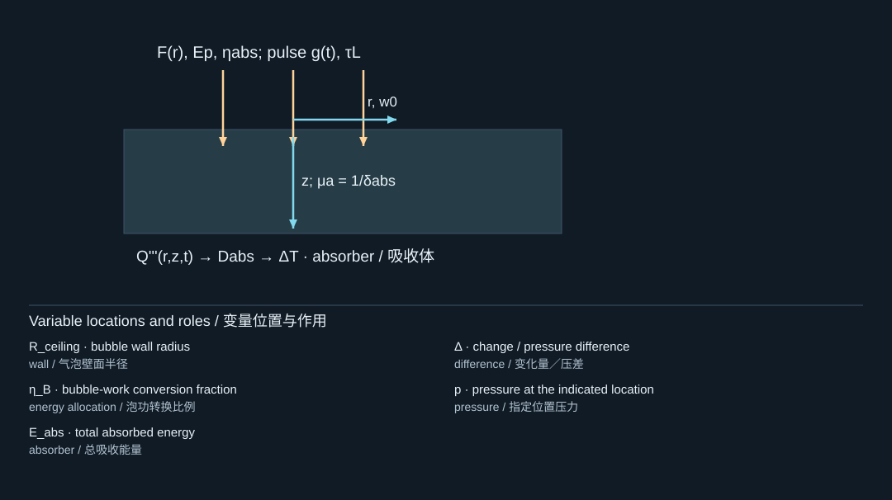
The diagram locates the physical system; its key lists the symbols in the formula. Read the definition in the surrounding derivation when a letter has different roles.
图示标出物理体系，图例列出公式中的符号。若某字母有多种作用，应以邻近推导中的定义为准。
This is not a complete bubble-energy balance. In particular, the plot explicitly excludes latent heat and contains no nucleation barrier or activation kinetics. It therefore cannot establish either activation or the actual . [S1, p. 1]
这并不是完整的气泡能量平衡。尤其需要注意的是，该图明确排除了潜热，也没有包含成核势垒或激活动力学。因此，它既不能确定是否发生激活，也不能确定实际的 。[S1，第1页]
The output of Stage 1 is a heating field and an energy budget—not yet a bubble.
阶段1的输出是一个热源场和一份能量预算，还不是一个气泡。